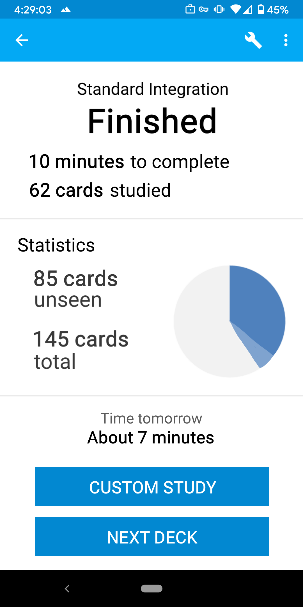

AnkiDroid UX Improvements
Deck Picker
After discussed changes:
Title leads to Deck Menu
Counts + nav leads to Deck Overview
No selected decks while on Picker possibly
BEFORE
 AFTER
AFTER

We have discussed that Deck Menu will have items relevant to managing the whole deck, while the Deck Overview will have items pertaining to everyday review
Deck Menu
After suggested/discussed changes:
Rare functions put into vertical nav
Options group view/edit easier
Links to Browser/Stats (easier than selected decks)
Add cards button
BEFORE
 SUG. 1
SUG. 1

Deck Overview
BEFORE
 SUG. 1
SUG. 1

Deck Finish
O/V
NEW
